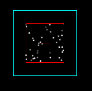

| Description |
| This program allows you to design particles and test other particle system functions. After you are finnished, you can export GML(GM6 and later) to the clipboard or a file for your game, or just for the designer. It is faster and easier than testing the game over and over until it turns out right. It is also useful for those who do not know the GML for particles, or hardly any GML. You may also import GML for particles and edit the variables or view it. This can serve as a "load" option for a particle in progress if needed. This program is made for GML, however, it can make quite interesting effects for just a screenshot or animation, for multiple uses. |
| Breif History |
| In June of 2006, there were very few, or no programs specifically made for creating particles and importing them into Game Maker. This program was designed to do that. Particle designer 1 was basic, but created a particle and exported GML for Game Maker. Even for those with little GML knowlege. Many scripts were made and version 1 was released a few months later. Although it did have a good interface(according to feedback) compared to other programs made in GM, many improvements could still be made. Thus, Particle Designer 2 was started in November 2006. With all of the additions, many more scripts and graphics were needed, so it took a long time to complete. Version 2.0 was released on April 12th, 2007. |
| Requirements |
|
Windows 98SE or later (compatable with Vista) 256Mb RAM or greater (recommended) Pentium IV processor or greater (recommended) DirectX 8.0 or greater | Credits |
|
Particle Designer ©2006-Present. All programing and graphics: Alert Games dialog dll programming: Cameron MacGregor convert.exe: ImageMajick Studio Beta testers:
Josh@Dreamland
And thank you everyone else who supported this project! |
|
When you open Particle Designer for the first time, you should open the preferences to set the options the way you want them(options -> preferences).
Once your settings are set, you can begin designing your particle and, if you want, a full particle system.
There are always at least two tabs open: emitter and particle. You can now either set all of the settings for the particle manually, or start off by generating a random particle(options -> ideal/full random OR press R/ctrl+R).
You can test the particle by pressing the 'burst' or 'stream' buttons(or press ENTER on the keyboard). By default, emitter1 streams the first particle, and emits 10 particles. To change this, click on the emitter1 tab on top.
When you are there, you will see other options for the emitter. You can also change this quickly by changing the value in the box to the left of the room speed.
You can click the 'mouse' button next to the input boxes in the emitter to use your mouse for the easiest way to set the emitter (You can move the emitter by simply hovering over the emitter selected and dragging it, if set in preferences).
While editing, you may hide the settings using the small arrow on the top-right corner of the bottom panel. This will greatly increase the speed of the program for testing.
Once you are done with the particle(s), you can export a tab, all of the particles, or the whole system to pull up in Particle Designer again(Export menu). See more on Emitters |
|
Using the tabs is very simple. The only thing to consider is the right-click options. Copying the tab creates a new seperate tab, with the same settings (only 3 tabs for each type can be used).
Deleting will delete the current tab, and other tabs of its type will shift down to available tabs of the same type.
Reseting the tab restores defaults. Renaming the tab will not only make it easier to identify, but will also be the name of the variable when exporting it.
Finally, A new feature in version 2.5 allows you to move all of that system type at once, on all non-particle tabs.
|
| F1 | Display this help file. |
| F2 | Make a new system. It will prompt you to discard any changes. |
| F3 | Take a screenshot of the particle area. |
| R | Randomize all unlocked settings of the current particle tab. It will randomize the last particle clicked if the current tab is not a particle tab. |
| Ctrl+R | Same effect as the 'R' key, except it will have less limitations on the values. |
| Shift | Hold shift while moving the emitter to move while still streaming a particle. |
| E | Exports the current tab as a file. |
| Ctrl+E | Exports the entire system as a file. |
| M | Move system. This moves all the positions for emitters, attractors, changers, etc. |
| Spacebar | This will freeze the program until a key or mouse button is pressed. Could be useful to drop-down a menu. |
| Esc | A shortcut to end the program. |
| Fullscreen Mode | This option will display Particle Designer in fullscreen every time it is started. Fullscreen does, however, slow performance. |
| Advanced Mode | This enables the use of the codebox. Click here to see more on how to use the codebox. |
| Background Color | The default background color when Particle Designer is started. Has no effect when a background image is loaded. |
| Crash Prevention | Particle Designer will clear all particles and stop emitting when the FPS(frames per second) is lower than that framerate value. |
| Particle System Code | This would export the function for creating the particle system in your file/clipboard. |
| Emitter Code | Exports the emitter code with the particle code when exporting particle(s). |
| Automatically Move Emitter | When checked, you can move the emitter by hovering your mouse over the center point and hold the left-mouse button and release in a new position. |
| Delete Off-Screen Particles | When checked, once the particle is out of the viewing window, it will be destroyed. |
| Show Code After Saving | When checked, if you saved a GML file, it will open automatically. You can also choose a program to open to display the exported code. If you don't, it will run the default program, or throw an error if it doesn't have a default program. |
| Clear Particles When Making Changes | When selected, every time you click 'change' or stop and stream again, the particles on the screen will be cleared before emitting again. |
|
An effective way to create a neat particle is to start with a random particle(if you need an idea). Choose ideal random a few times to find a good effect.
Then you may want to 'lock' some settings. To do this, click the checkbox under the lock image's column. To lock or unlock all settings, you can click that lock button.
After you lock some settings, you can press ideal random again, or full random to tweak the unlocked settings.
This particle may not look good with a moving emitter in a game, however, there are a few options. First, you can move where the particle system can be drawn. This may require the use of more than one particle system. This code changes the system's relative position:part_system_position(ind,x,y) Second, you can record a GIF and place the particle in your game as an image instead. You can also use a regular screenshot, and edit it in Game Maker or in-game. |
| Using a Sprite for the Shape |
| In a particle tab, there is a button on the top left of the settings panel labeled "Sprite". This allows a user sprite rather than the 13 default shapes. The supported image extensions are .gif, .bmp, .png, and .jpg. Gif's can also be animated to make use of the extra parameters. 'Stretch' is whether or not to make the animation stretch to the full life of the particle. 'Random' is whether to start the animation on the first subimage, or a random one. The codebox does not support testing with the external image. Sprites are not included with GML or PDSF saves, so the exported file may need to be altered for your game! |
| Using Random |
| This option randomizes the unlocked settings. 'Ideal random' will only change the variables that are most commonly used, and may be useful to start your particle. The other option is to use 'full random', which customizes most of the settings with less restraints. This may be helpful with only a few unlocked options. You may 'lock' a setting to prevent it from being randomized. As a shortcut, you can press 'R' to create an ideal random particle as well. (Use ctrl+R for full random.) |
| The part_type_step() and part_type_death() settings are located on the bottom right of the particle tab's settings. With 'step', each step the indicated particle will be emitted from that particle. Death does the same thing, except when the particle is dead(only from the 'life' setting, not a destroyer). Loops can not be made when selecting particles, to prevent issues. This includes when particles have the part-step or part-death as each other, and will never die unless there is a destroyer, or manually cleared. |
| An option for changing the emitter region is via the mouse. After using the mouse to set, the values will appear in the input boxes in that tab so they can be altered. You can also make the areas outside of the center by adjusting the values manually. |
|  | This is an example of using the mouse to resize the emitter. All system parts can be changed with the mouse option. |
| Also in the emitter tab is the particle emit settings. From here you set how many of which particles to emit. You can assign more than one particle, however, it will only emit one particle type while streaming. |
| Attractors |
| Attractors can pull particles towards its center, or push them away(using negative force). There are different methods of attracting and force. These methods include constant, linear and quadratic. Constant uses the force value wherever the particle is in its region, while quadratic uses the least force when the particle is farther away. Linear is set by default. Additive indicates if the motion should be added each step, or just move towards the center with the force value. |
| Deflectors |
| Deflectors are the only way to have particle collisions. It is possible to have the particles speed up, reverse, or stop when colliding with the deflector. If the particle is travelling the oppositte way the 'kind' is, then the particle would stop. If not, it will move with the friction value. You may use a positive or negative value for the particle's motion. | Changers |
| To change the particle type while in its lifespan, you can use a changer. Parameters may seem obvious, however may need some testing to find what really happens. "Motion" will change the shape, but not the color of the particle. "Shape" will keep the speed and direction, BUT will change wiggle and increase of speed and direction. Other settings like gravity and lifetime are discarded or ignored. "All" is the least confusing, and changes all settings. | Destroyers |
| Destroyers destroy the particle when it enters the region. There are simple with no additional options for a destroyer. Particles are destroyed in a rectangular region when the particles are meeting the boundary outside of the region. But when inside, they seem to be destroyed in the expected shape. This may be a bug with GM, or just an unexplained detail of the function. |
|
In order for particles to be created from an emitter, you need to burst or stream the particles. Burst emits the number of particles once, while stream emits the number per step.
This value is set in the emitter tab, which also includes the specific particle to emit. However, you can also set this quickly with the 'emit #' box next to the burst and stream buttons.
The value can be any number except for 0 of course. Inserting a negative value will emit a particle every number of steps on average.
The 'room speed' determines how many steps per second there are. By pressing ENTER, you can change the particle for a shortcut. And by holdingSHIFT, you can make the emitter follow the mouse while being set. You can also emit a number of particles for a certain times by using the codebox |
|
The codebox allows you to adjust values and particles while they are being tested, currently in a complicated manor.
Additional editing keys usable: arrow keys, home, end, delete, backspace, and enter. Using ctrl+v will overwrite any text and paste the clipboard text.
The codebox text can only be saved in a pdsf file, but can be copied to the clipboard by pressing ctrl+c. You are allowed up to 99 lines, and it executes the code as if it was part of the program.
The "Set tabs each step" option will set all of the changed settings and stream the particles when checked. If not, the particles will have to be streamed manually. |
| Importing |
| You may want to import a particle by file. This will read the particle functions in any order. Although accepted, some functions do not change any settings in the program. This includes functions like "part_type_create()" and the "#define" in GML. When a function is not recognized, a message will show which lines are not understood. If there is the emitter function burst/stream in it, it will set the current emitter to stream that particle with the number from the file. By importing, it will overwrite other existing tabs. It only recognizes one function per line and only variables of the functions. Currently it does not recognize colors or other constants besides 'true' and 'false'. |
| Exporting |
|
Once you are finnished creating your particle system, you need to export it, or save it for later use. You may export the selected tab,
all the particles, or the entire system. Each can save as a GML file, copy to your clipboard, or save the entire system as GML or a Particle Designer file.
You can also append an existing file when exporting a single tab by saving over the same file. A PDSF will save the tabs, system positions,
locked settings, and if in advanced mode, the codebox code. After exported, you need to paste the code into a code action in an object's 'create' event(at first). Or, you can import the GML file to the game, and put an 'execute a script' action from the library into the create event of an object or room. The codes needed are found in the manual, or exported with your code(if set in the preferences). The files are exported to gml, which normally do not have any program to view them in. To set a program for that file type, go to the Preferences and click the folder icon. To set the default program in Windows, right-click on any .gml file, and click "open with...". Then select the program you want(such as notepad), and click "always use this program for this file", then click "ok". See more on the code on exporting into the game. |
You can only put GML into your game. A GML file may not include all of the information to make the particle
work(see 'Functions'). If you exported a GML file with one particle or more, you can import this script into
Game Maker(Scripts -> Import Scripts). Once imported, you need to add the action "execute script" in the create event, and select
that script. Then, you need to make sure that all of the code for your particle system is there. When a system part is set(Sname), it should be
in the code before something else uses it. "Sname" can be changed to any varibale name you choose, as long as it is GML valid.
You need at minimum:
|
|
Sname, Ename, and Pname are sample variables. You may change them, but then you MUST make sure the variable that uses it matches.
Also, make sure that there are no identical variables. Enjoy using this program, and hope it helps you out in your games!
If this code is not in your game, copy this particle system create code and paste in an objects' create event.
Be sure that it is called(placed) before other particle functions. Use the variable as an indicator of the system.
You only need one system for each depth(usually only one is used).
Sname = part_system_create() This is the emitter code in case you have not exported it. If you want to change it during the game, you can put it in the another event for that object: Ename = part_emitter_create(Sname) part_emitter_region(Sname,Ename,x,x,y,y, ps_shape_ellipse,ps_distr_gaussian) If you want the emitter to burst instead of stream, then replace the function with the following(You can place these functions in other events. Stream can be stopped by streaming 0 particles.): part_emitter_burst(Sname,Ename,Pname,10) See extra functions |
|
In some cases, you may want the particle system to be executed a little differently. For these functions,
you may want to look at the Game Maker manual. Here are some common functions with a brief definition.
Sometimes you don't want the particle system to draw every step. This function allows you to update it when you need to.
(You can also use functions similar to these for drawing. See manual for these functions.)
part_system_automatic_update(ind,automatic) When it is not automatically updated, you can update it once by using this: part_system_update(ind) You can change the position where the particle system is drawn with this: part_system_position(ind,x,y) clearing the system of particles is important when changing places, switching rooms, etc. part_particles_clear(ind) Finally, when you are done using the system, you might as well delete it to save space. part_system_destroy(ind) |
|
Particle systems have some peculiar events with some of its functions. The GM manual does help to explain some events,
but others are rather unexpected. One example would be changing the values while streaming with colors.
Changing colors while streaming, such as random colors, can have 2 effects. If the changed color is the only value(1 color),
then each particle will keep its own color. If there is more than 1 color set, all of the particles will have their color changed.
For demonstration, paste this (ctrl+v) in the code editor in Advanced Mode:
global.op_color_val1[1] = 8421440*random(1); |